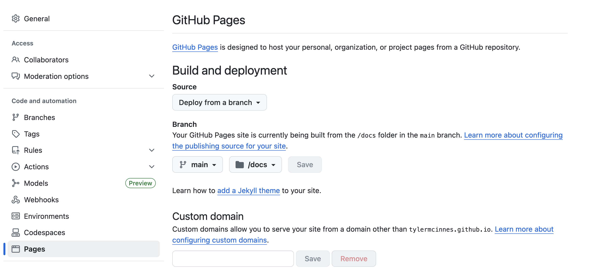

Building our own research porfolio
Aims
- Learn how to publish a website.
- Gain experience with Quarto, explore options around format, theme, styles.css, etc., to create a polished website.
- Pin a repo to showcase your capabilities.
- Gain confidence in working publicly.
As an alternative to creating a research portfolio website, you may instead choose to focus on creating a website that documents one of your particular projects, or some other form of website. While we recommend the concept of a pinned github repo to highlight your abilities as a researcher and bioinformatician, how you do this is up to you.
Why a portfolio website?
If you want to progress in bioinformatics, you should assume that people (future employers) will look at your github. Having a set of tidy repos that document your workflow is the minimum you should aim for. In addition to these tidy repos, we can build a single repo that directs and guides viewers through our github and highlights our key skills.
Aside from github repos it can be useful to create websites as a way to market either yourself and your work, or the work of your lab group. Quarto can make this easy. Jadey Ryan has a great website that really showcases what a Quarto website can look like.
To get a better understanding of why I am recommending this and what we are trying to do, we recommend this talk from posit::conf(2024) titled “Github - How to tell your professional story”. In this talk, Dr. Abigail Haddad outlines how Github can be used to demonstrate not just the raw coding skills you use frequently, but also the auxilliary skills that define how you work - your problem solving skills, your practices, and how you communicate.
We are going to take some of the advice from that talk, which says that all of your github should be used to actively demonstrate your skills and tell your story, and we are going to compress it down to a single github repo which will convey (or at least introduce) your story. We will Pin this repo so that it’s the first thing people see when they visit your github page, and publish it as a working website so that you also have a link you can drop into LinkedIn or Bluesky posts, incorporate into your email signatures, whenever you feel it’s appropriate to do some self-marketing.
Initial setup
Using skills from yesterday and today’s workshops:
Initiate a new, public github repo with a name like “Work Portfolio” or equivalent.
In RStudio, start a New Project and use the Version Control option to link it to the new repo.
Create three .qmd files. For each file, set the YAML header to include an appropriate title and add at least one header and a piece of sample text to each document:
index.qmd. Index.qmd will work as the landing page for the site, and could include something like the short blurb found at the top of a CV.portfolio.qmd. Portfolio will contain hyperlinks to your work - either to other github repos, publications, google scholar account, LinkedIn account etc., (it will be the definitive, exhaustive set of your work).research_focus.qmd. Research_focus.qmd will include a written statement about your focus as a researcher.Create a
_quarto.ymlfile using the template from the previous section. Under contents, include index.qmd first, then portfolio.qmd and research_focus.qmd.
Note: these initial files are templates only, and will be populated later.
Refining the site
Here we will look at a number of options through the _quarto.yml file to improve the look of the website.
Improved navigation and layout
Sections
We can group pages under a header in sidebar navigation. Clicking on the header will open a drop-down menu. Each section can be given it’s own name, and can have any number of individual pages nested below it through the “contents:” key.
Sections are very useful for e.g., a website that focuses on discrete aspects (two day protocols, wetlab and drylab sections etc.,)

styles.css
In addition to the pre-built format that themes can provide we can also customise our sites with a styles.css file. This a “Cascading Style Sheets” document, which can be used to override all of the Quarto defaults for HTML documents. The .css file is used to manipulate fonts, choose colours, layout, background for code cells, side and navbar aesthetics, table text alignment - almost every visual aspect can be changed with a styles.css file.
The styles.css file is written in css - it is not Quarto specific, and requires reasonably detailed knowledge. We recommend using templates sourced online or chatGPT equivalents for building a styles.css template which you can then work from.
Styles.css is stored in the top level of the directory. In the _quarto.yml document under format, we can add a new line at the same indentation level as theme and added css: styles.css
format:
html:
css: styles.cssHere we created one using ChatGPT, by asking it to create a styles.css file using the specified colour palette (these colours come from a Kākāpō palette by Geoffrey Thomson). Copy-paste this text into a text file and save it as styles.css:
/* ===========================
Custom Portfolio Styles
=========================== */
/* ----- Colour Palette ----- */
:root {
--olive: #7D9D33; /* Primary green accent */
--sage: #CED38C; /* Light green background */
--gold: #DCC949; /* Secondary accent */
--taupe: #BCA888; /* Soft contrast */
--terracotta: #CD8862; /* Warm highlight */
--brown: #775B24; /* Dark brown text / navbar */
}
/* ----- Base ----- */
body {
background-color: var(--sage);
color: var(--brown);
font-family: "Helvetica Neue", Arial, sans-serif;
line-height: 1.6;
margin: 0;
padding: 0;
}
/* ----- Headings ----- */
h1, h2, h3, h4, h5, h6 {
color: var(--brown);
font-weight: 600;
margin-top: 1.2em;
}
/* ----- Links ----- */
a {
color: var(--olive);
text-decoration: none;
transition: color 0.2s ease-in-out;
}
a:hover {
color: var(--terracotta);
text-decoration: underline;
}
/* ----- Sidebar ----- */
.sidebar {
background-color: var(--sage);
color: var(--brown);
border-right: 2px solid var(--taupe);
padding-top: 1em;
}
.sidebar a {
display: block;
color: var(--brown);
padding: 0.5em 1em;
font-weight: 500;
}
.sidebar a:hover {
background-color: var(--gold);
color: var(--brown);
text-decoration: none;
}
.sidebar a.active {
border-left: 4px solid var(--terracotta);
background-color: rgba(205, 136, 98, 0.15);
}
/* ----- Navbar ----- */
.navbar {
background-color: var(--brown);
color: var(--gold);
padding: 0.6em 1em;
display: flex;
justify-content: space-between;
align-items: center;
border-bottom: 4px solid var(--terracotta);
}
.navbar a {
color: var(--gold);
margin-left: 1em;
font-weight: 500;
}
.navbar a:hover {
color: var(--sage);
}
/* ----- Footer ----- */
.page-footer, .footer {
background-color: var(--brown);
color: var(--gold);
text-align: center;
padding: 1em;
font-size: 0.9em;
border-top: 4px solid var(--terracotta);
}
.page-footer a, .footer a {
color: var(--terracotta);
text-decoration: none;
}
.page-footer a:hover, .footer a:hover {
color: var(--gold);
text-decoration: underline;
}
/* ----- Buttons ----- */
button, .btn, input[type="submit"] {
background-color: var(--terracotta);
color: var(--sage);
border: none;
padding: 0.5em 1em;
border-radius: 6px;
cursor: pointer;
font-weight: 600;
transition: background-color 0.2s ease-in-out;
}
button:hover, .btn:hover, input[type="submit"]:hover {
background-color: var(--brown);
color: var(--gold);
}
/* ----- Content Boxes ----- */
.content-box {
background-color: var(--taupe);
border: 1px solid var(--brown);
padding: 1em;
border-radius: 8px;
margin: 1em 0;
box-shadow: 0 2px 6px rgba(0,0,0,0.1);
}
/* ----- Blockquotes ----- */
blockquote {
border-left: 4px solid var(--terracotta);
background: var(--gold);
color: var(--brown);
padding: 1em;
margin: 1.5em 0;
font-style: italic;
border-radius: 4px;
}
/* ----- Tables ----- */
table {
border-collapse: collapse;
width: 100%;
background-color: var(--sage);
}
th {
background-color: var(--brown);
color: var(--gold);
padding: 0.6em;
}
td {
border: 1px solid var(--taupe);
padding: 0.5em;
color: var(--brown);
}
/* ----- Code Blocks ----- */
pre, code {
background-color: var(--taupe);
color: var(--brown);
font-family: "Courier New", monospace;
border-radius: 4px;
padding: 0.3em 0.5em;
}Publishing the site using GitHub Pages
To publish a website - that is, to take it from the local-only html file to a hosted site that is accessible via url - there are a number of options. Today we will focus on publishing through GitHub Pages. Within GitHub Pages there are three options for publishing (render to docs and publish, using the quarto publish command, or using a Github Action). We will use the simplest option, render to docs and then instruct GitHub to publish from the docs directory.
1. Setting up
In the
_quarto.ymlfile, make sure that we haveoutput-dir: docsunderproject. Quarto render will then output all files to the docs directory.We need to add a specific file that tells GitHub pages not to do additional processing of our site (github has built in methods for publishing, which we do not want to use here). Under the Terminal tab in RStudio, run:
touch .nojekyllThe file is not rendered - starting with a . means that the file is not rendered and is instead treated as a high-level argument.
2. Render, add, commit, push
While still in the Terminal window of RStudio, run:
quarto rendergit add docsgit commit -m "publish to docs/"git pushOur new rendered docs should now be stored safely in our repo.
3. Deploy from main/docs
Navigate to the GitHub repo for the page you wish to deploy. Under Settings > Pages, use the dropdown menus under the Branch header to select main branch, and then switch the directory from /(root) to /docs. When ready, click Save.
The page should refresh with a new note saying “Your Github pages site is currently being built…”.

Refresh the page to see the url for the new site and a button to Visit the site. Copy this url, return to the main page for the repo, and use the buttons on the github site to edit the About and/or Readme. Alternatively, back in RStudio open the README.md file and add the url there. Explore and share your now live portfolio webpage!
4. Pin your repo
On the GitHub website you can pin up to six repos as visible on your main landing page, with the remaining repos being visible under the repos tab. Once your research portfolio website is underway we recommend pinning it, alongside your most completed and well-documented repos, so that they will be the first thing visitors will see.
Summary
You can reasonably expect people to look at your github repos. Creating a repo to guide viewers through your portfolio of research is a a good way to influence what people will see.
With quarto we have a great level of control over the documents we create with arguments in the _quarto.yml file, through the use of themes, and a dedicated styles.css file.
There are multiple ways to freely publish your documents as websites. Github pages works well with quarto docs and the method shown here is simple and easy to follow.